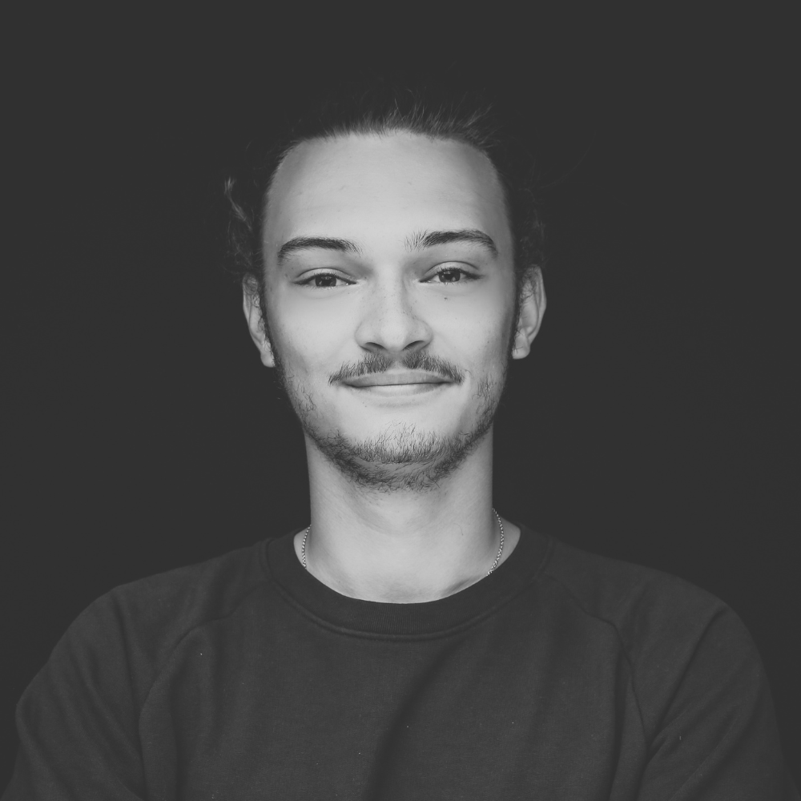

Simon Busshart
Tech Generalist & Founder
EDUCATION
ThePower Business School
PowerMBA
Apr 2021 - Nov 2022
Social Media Akademie
Social Media Manager
Aug 2021
Transformation Academy
Certified - Entrepreneurship & Business Coach
Issued Nov 2024
Professional Experience
Business Consultant & Coach
Self-employed | Feb 2018 - Present | Berlin, Deutschland & Remote
- Specializing in business model innovation, AI-driven process optimization, remote workforce solutions
- Focus on leadership coaching, neurodiversity inclusion, and sustainable growth strategies
- Skills: Digital Strategy, Coaching, Consulting, Business Realignment, Corporate Strategy, AI, Process Automation
Co-Creator & Host
High aesthetic | Jan 2022 - Oct 2024 | Berlin, Deutschland
- Produced over 52 cultural events showcasing diverse artistic expressions
- Led brand partnership initiatives to increase visibility and impact
- Developed interactive exhibitions engaging Berlin's creative community
- Skills:Creative Entrepreneurship, Branding, Community Management, Strategic Brand Consulting
Strategic Business Development Manager
erdbär GmbH | Apr 2022 - Jan 2023 | Berlin, Deutschland
- Led development of innovative business models for Baby Food On Demand
- Optimized e-commerce platforms and implemented digital marketing campaigns
- Worked with agile, holacratic team structure
- Skills:Business Development, Digital Marketing, Corporate Strategy, Content Strategy, Business Analysis
Managing Partner
Ripmon GmbH | Nov 2017 - Aug 2021 | Germany
- Managed multiple business models including e-commerce platforms and subscription services
- Provided consulting services in business model development and process optimization
- Skills:Creative Entrepreneurship, Business Realignment, Go-to-Market, Agile Methods
Innovation & Digital Transformation Consultant
Raumagentur Thomas Reith GmbH | May 2019 - Feb 2020 | Offenbach, Deutschland
- Supported digital transformation for one of Europe's largest office furniture dealers
- Implemented team chat solutions and assisted with ERP system rollout
- Skills:Digital Strategy
Startup Consultant
Black Sofa Agency | Oct 2018 - Sep 2019 | Frankfurt am Main, Deutschland
- Involved in founding phase of niche web development company
- Skills:Business Planning, Web Design
Founder
Janebox / 1st Cannabis subscription Box in Europe | Jun 2016 - Oct 2018 | Frankfurt, Deutschland
- Created Europe's first cannabis subscription service with monthly curated products
- Built strong customer relationships and loyal customer base
- Skills:Creative Entrepreneurship, New Business Development, E-Commerce, B2C
Technical Consultant
sbcdigital GmbH | Sep 2016 - Apr 2018 | Frankfurt/Rhein-Main
- Provided IT consulting services and supported digital transformation initiatives
- Optimized processes and improved IT infrastructure
Founder and Producer
Exfork | Apr 2013 - Mar 2017
- Founded production company focused on IT hardware manufacturers
- Produced videos and short films for trade shows
- Maintained relationships with major IT companies like Nvidia, Intel, and Club3D
- Skills:Creative Entrepreneurship, Video Production
INTERNSHIPS
- Shift GmbH | Jun 2016 - Jul 2016 | Frankfurt am Main
- Envision Entertainment GmbH | Jun 2015 - Jul 2015 | Ingelheim am Rhein
- Fotostudio Birgitt Kallerhoff | May 2012 - Jul 2012 | Idstein
- zuuka | Mar 2012 - Apr 2012 | Offenbach
LANGUAGES